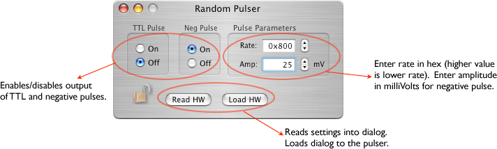

The Random Pulser was built by CENPA at the University of Washington. It is controlled by ORCA through an IP 408 VME connection. It can produce two types of pulses: a TTL and an negative pulse with an adjustable amplitude. The rate ranges from 10 kHz to 0.001 Hz depending on the discriminator setting for the noise source.
The configuration icon for the random pulser is: 
